Île aux Forbans
Une escapade à la rencontre de l’histoire des pirates et du patrimoine de l’île.
Découvrez l’Île aux Forbans, le Cimetière des Pirates et les paysages de Sainte-Marie avec Nah Ranaivo, organisateur local d’excursions. Profitez d’un accompagnement adapté à votre séjour.
Découvrir nos excursions RéserverVous cherchez une excursion à Sainte-Marie, Madagascar ? Partez à la découverte de l’histoire des pirates, des paysages de l’île et de ses eaux turquoise avec Nah Ranaivo.
Une escapade à la rencontre de l’histoire des pirates et du patrimoine de l’île.
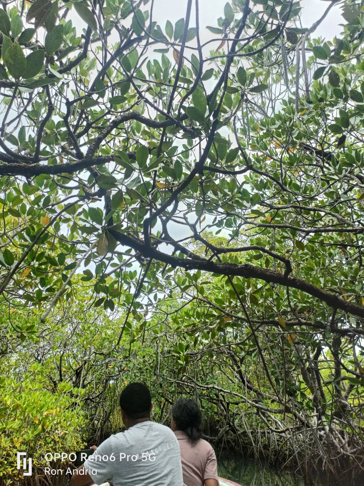
Une promenade au cœur d’un paysage naturel paisible et verdoyant.
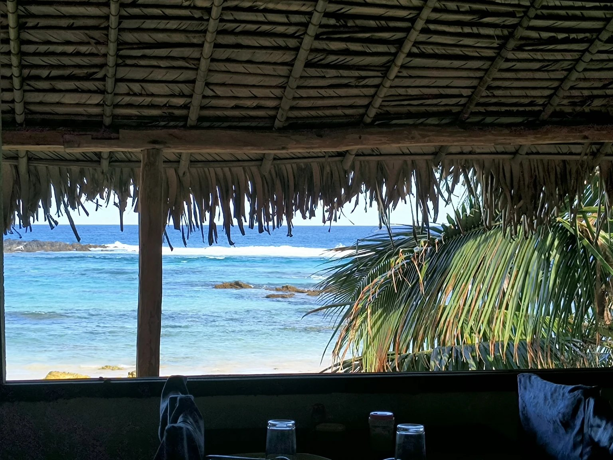
Profitez des eaux et des paysages naturels de Sainte-Marie.

Découvrez une île aux plages de sable clair et aux eaux turquoise.
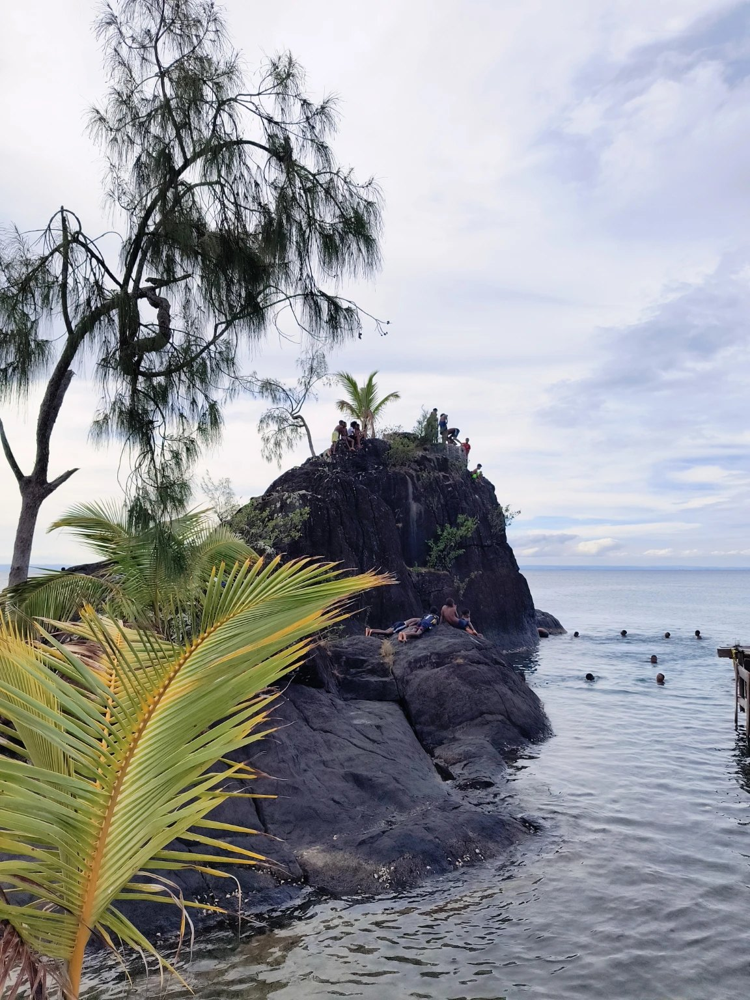
Explorez une page fascinante de l’histoire des pirates.
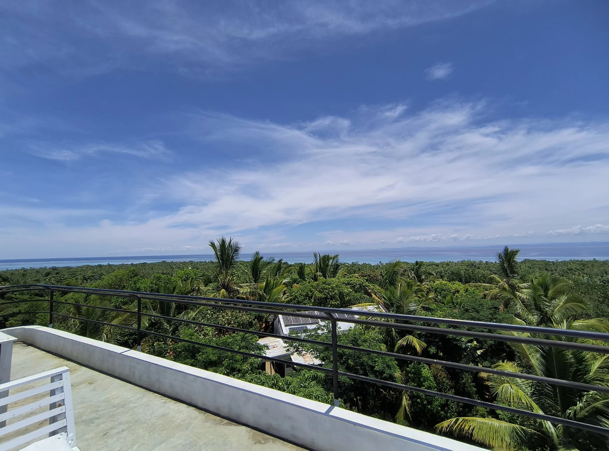
Découvrez un lieu emblématique du patrimoine de Sainte-Marie.

Un site remarquable de l’histoire religieuse de Madagascar.

Admirez les bancs de sable au milieu des eaux cristallines.
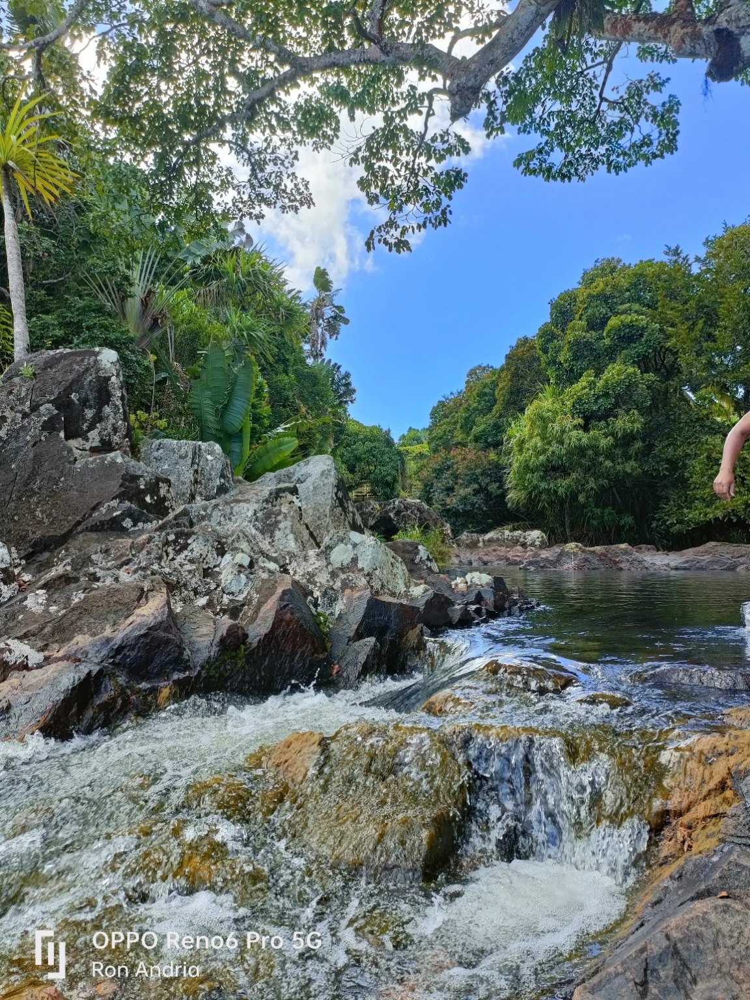
Partez à la découverte d’un site naturel rafraîchissant.
Déplacez-vous confortablement pendant votre séjour grâce à nos solutions de transport et à un accompagnement adapté à vos excursions.
Choisissez le moyen de transport adapté à votre séjour et à vos excursions à Sainte-Marie.


Merci à tous nos clients pour leur confiance et pour ces beaux moments partagés à Sainte-Marie.
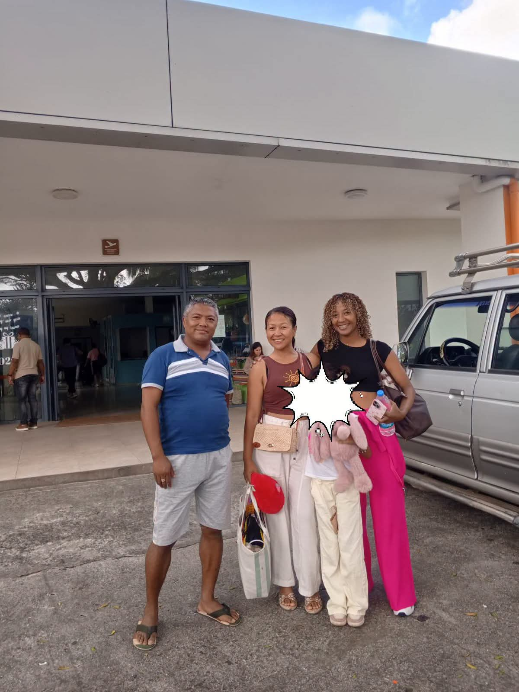
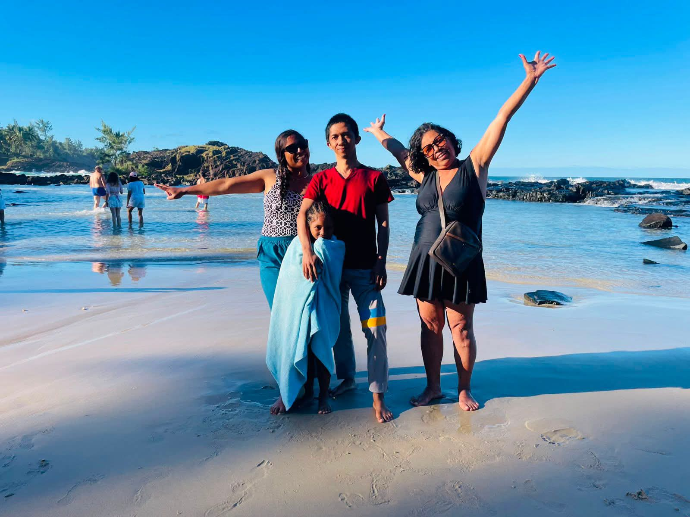
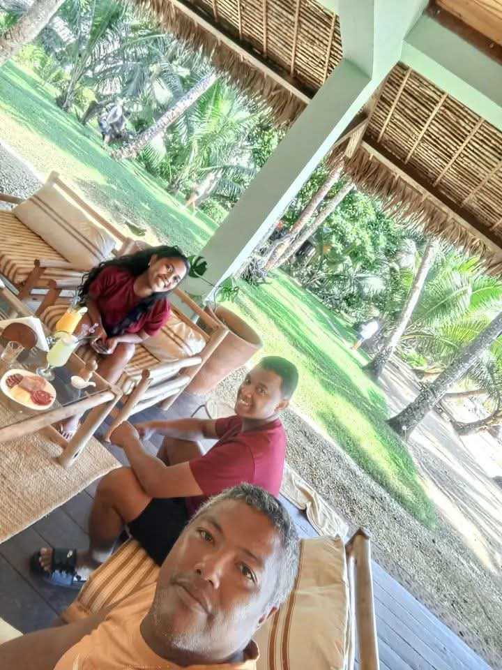
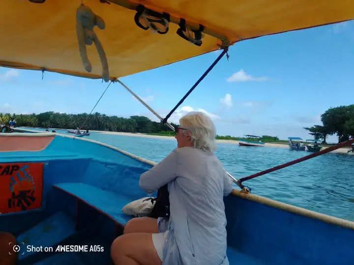
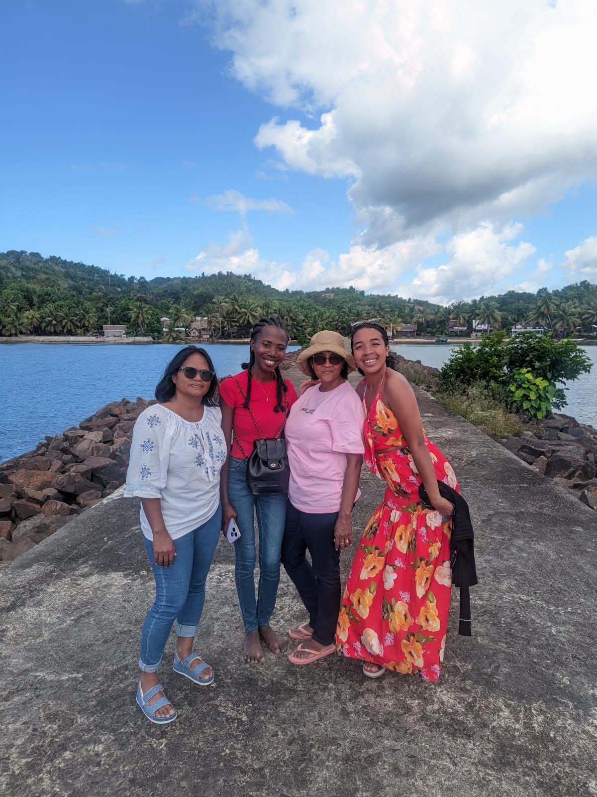
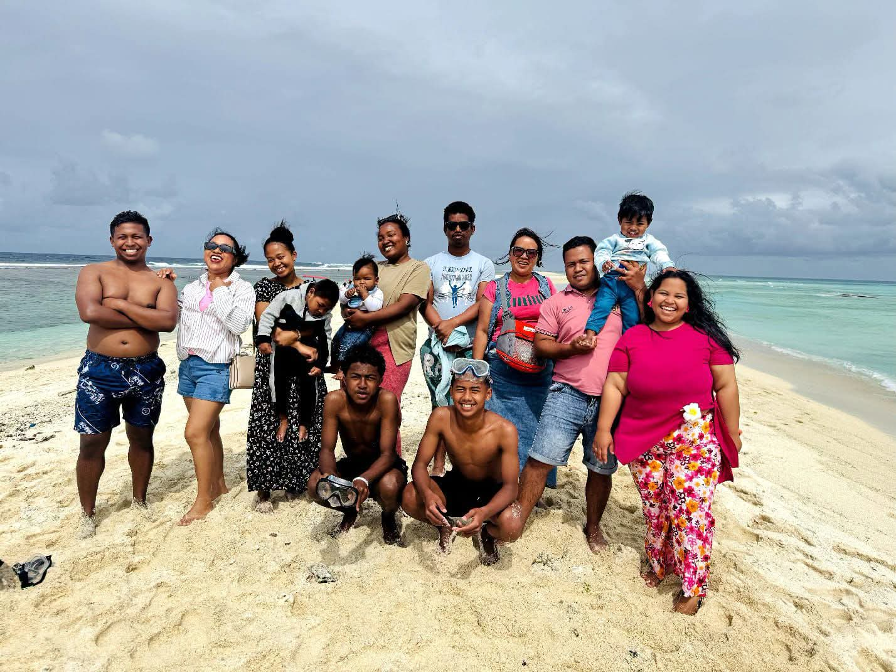
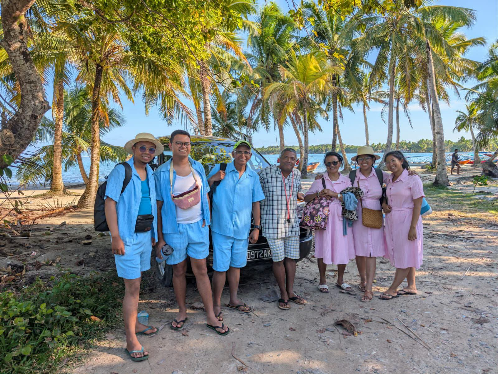
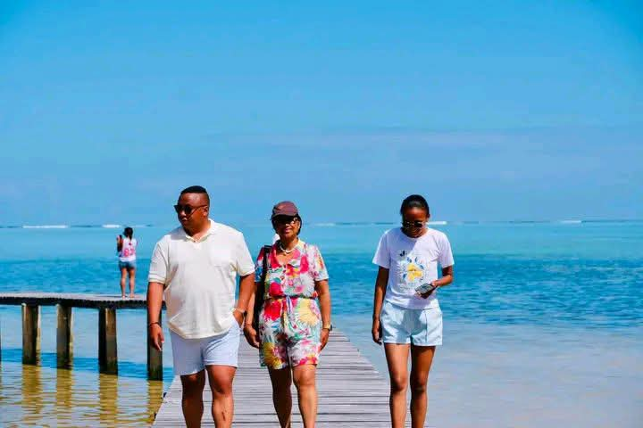
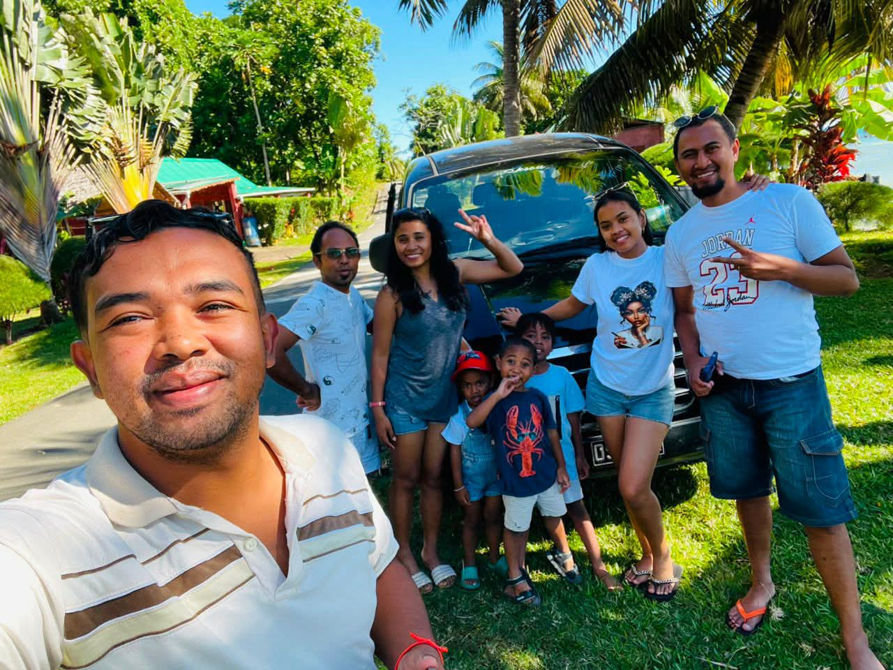
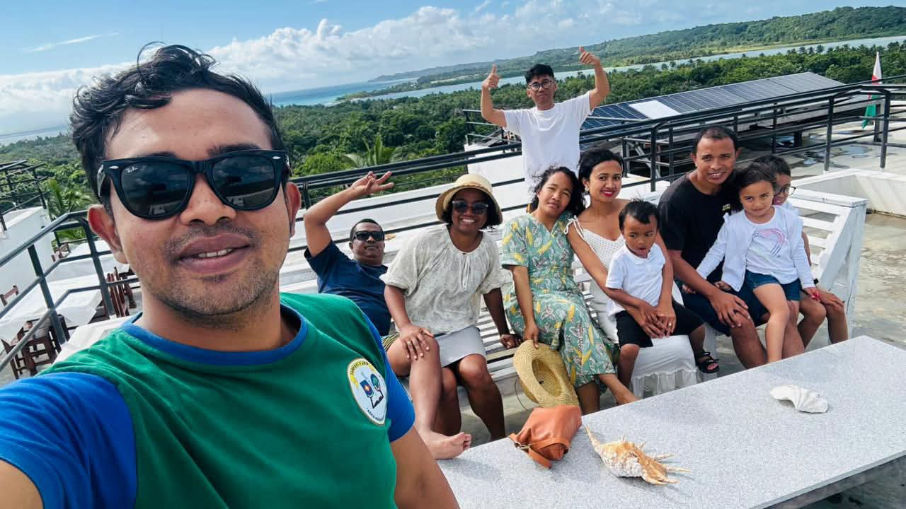
Nah Ranaivo vous accompagne pour découvrir Sainte-Marie à Madagascar. Que vous souhaitiez visiter le Cimetière des Pirates, explorer l’Île aux Forbans ou profiter d’une découverte de l’île, préparez votre excursion avec un organisateur local. Contactez-nous pour organiser votre sortie et connaître les disponibilités.
Parmi les lieux à découvrir figurent le Cimetière des Pirates, l’Île aux Forbans et les paysages de l’île. Contactez Nah Ranaivo pour préparer votre programme.
Envoyez une demande depuis le formulaire de contact. Vous pourrez préciser la date souhaitée, le nombre de personnes et l’excursion qui vous intéresse.
Des solutions de transport peuvent être proposées selon vos besoins : Starex, 4×4 et Tuktuk. Demandez les disponibilités lors de votre réservation.
Envoyez votre demande. Nous vous répondrons pour confirmer les disponibilités et les détails de votre excursion.
WhatsApp : +261 34 72 429 62